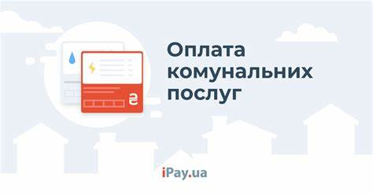
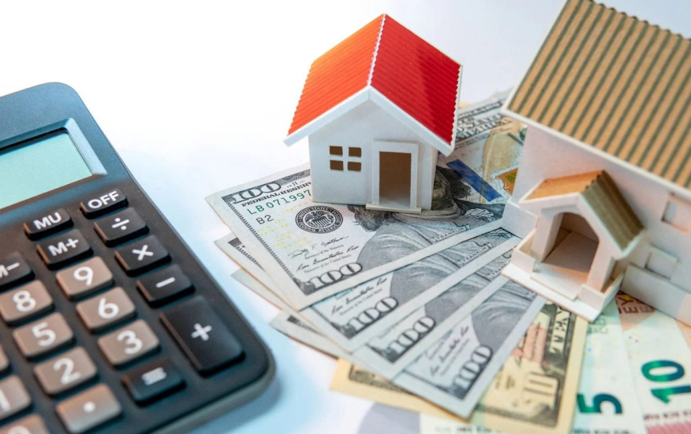

-
Як сплатити через інтернет?
Не виходячи з дому, можливо розрахуватися за газ, воду, електроенергію та опалення. Для цього є різні сервіси та платформи. Вони доступні, як з комп’ютера, так і зі смартфона. Вам знадобиться банківська картка, покази лічильників та дані договору з постачальником.
Погасити комунальні рахунки можна:
-
На iPay.ua
Це сервіс онлайн-платежів, на якому зручно та швидко оплатити будь-яку послугу без реєстрації та зайвих кроків. На сайті приймають Visa, Mastercard, Простір, які випущені українськими банками:
- Перейдіть у Каталог https://www.ipay.ua/ua/bills/utilities,оберіть тип комунальної послуги та область.
- Знайдіть КП.
- На сторінці підприємства вкажіть особовий рахунок та інші потрібні дані (значення приладів обліку, адресу тощо).
- Перевірте або внесіть суму.
- Скористайтеся для оплати електронним гаманцем Google Pay, Apple Pay, masterpass або введіть реквізити картки.
- Підтвердьте операцію і збережіть чек.
Авторизація на сервісі не обов’язкова, проте зареєстровані користувачі витрачають на платежі ще менше часу завдяки створеним шаблонам і автоматичному збереженні даних.
 -
В онлайн-сервісах банку
Платформа вимагає реєстрації за допомогою картки, яку видав саме цей банк, та фінансового номера телефона:
- Створіть особистий кабінет у застосунку чи вебпорталі.
- Знайдіть КП, внесіть потрібну інформацію.
- Сплатіть доданою карткою.
- Підтвердьте запропонованим способом.
Збережіть форму платежу для наступних оплат.
-
На сайті постачальника
Великі комунальні підприємства створюють власні майданчики для швидкого розрахунку за надані послуги. Після реєстрації найчастіше доступні такі можливості:
- Внесення показників лічильників та контроль за нарахуваннями.
- Можливість перерахунку та отримання інших онлайн-послуг.
- Оплата.
- Оповіщення про важливі зміни в роботі, наприклад, відключення електроенергії.
-
-
Через касу
Для споживачів, які звикли до традиційних методів, досі приймається оплата через касу. Потрібно дізнатися час роботи, підготувати квитанції та гроші. Більшість кас оснащені pos-терміналами, тож готівку знімати не обов’язково. Платежі можна зробити у найближчому банку, відділеннях Нової пошти та Укрпошти.
-
За допомогою терміналу
Термінали самообслуговування розташовані у всіх містах країни. У деяких (що належать банкам) доступний розрахунок карткою, більшість приймають лише купюри. Щоб оплатити:
- Знайдіть найближчий кіоск самообслуговування – City24, Easy Pay, Global Money, ПриватБанк.
- На екрані оберіть необхідне КП.
- Уважно введіть персональні дані.
- Завантажте готівку.
- Завершіть платіж та надрукуйте квитанцію.
Які є способи оплати комунальних послуг
Всі регулярні платежі сьогодні можна здійснити багатьма способами. Для оплати існують спеціальні платформи, банківські застосунки, термінали та каси. Що обрати, щоб не витрачати щомісяця години життя на черги, розкажемо далі.